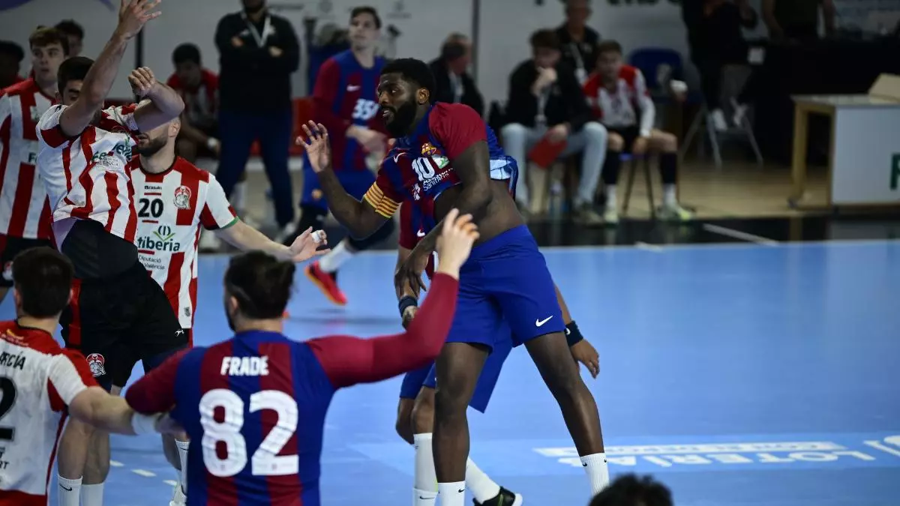
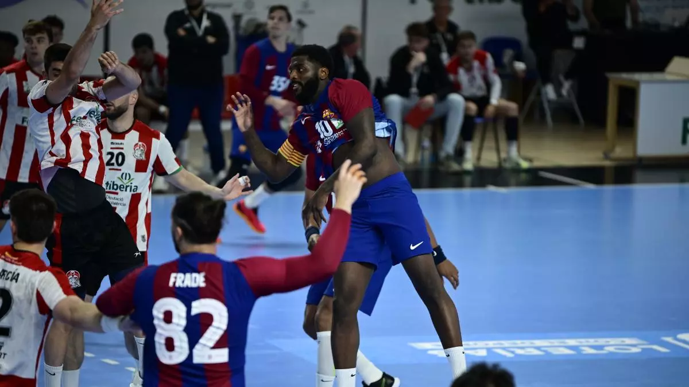
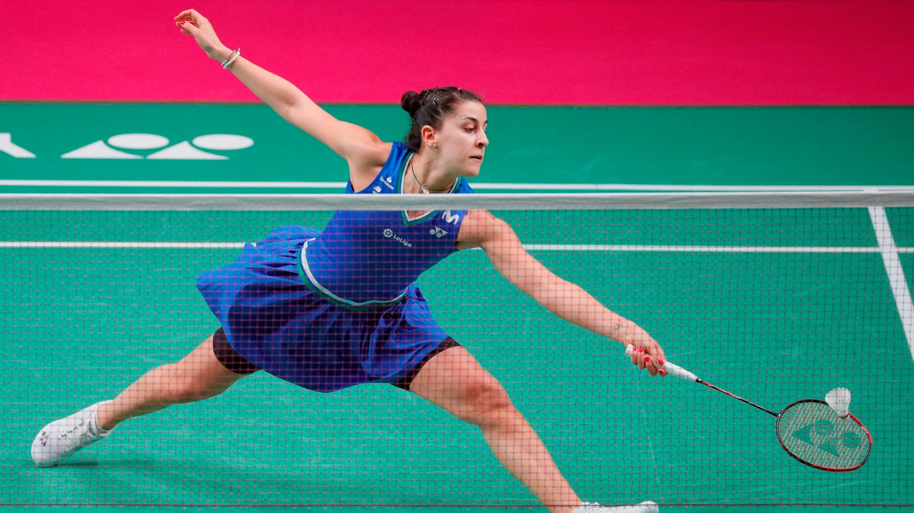
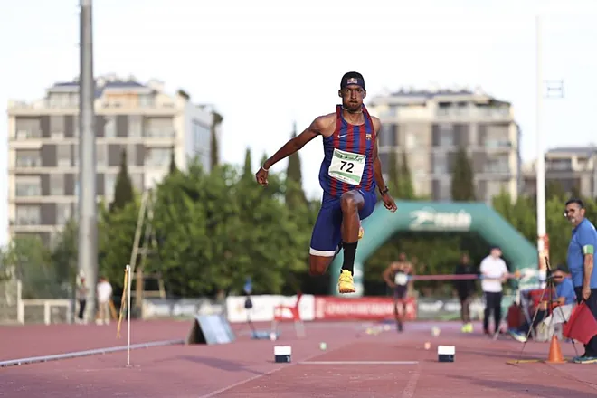

El Barça cierra la Liga ASOBAL con la mayor 'paliza' de la historia
Los azulgranas ganaron en Puerto de Sagunto por 20-51, superando el récord que tenían con un doble +28
Los azulgranas ganaron en Puerto de Sagunto por 20-51, superando el récord que tenían con un doble +28
La onubense Carolina Marín superó su debut en el Abierto de Singapur con un trabajado triunfo sobre la malasia Jin Wei Goh por 22-20 y 21-18
Busca soluciones creativas a sus patrocinios con los italianos y los austriacos hasta se plantean fichar a Álex

Habrá 35 hombres y 33 mujeres en Roma, aunque el equipo aún puede aumentar pendientes del 'Road to Rome' de European Athletics para este Campeonato
